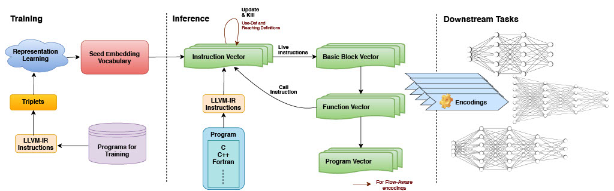

IR2Vec is a LLVM IR based framework to generate distributed representations for the source code in an unsupervised manner, which can be used to represent programs as input to solve machine learning tasks that take programs as inputs.
This repo contains the source code and relevant information described in the paper (arXiv). Please see here for more details.
IR2Vec: LLVM IR Based Scalable Program Embeddings, S. VenkataKeerthy, Rohit Aggarwal, Shalini Jain, Maunendra Sankar Desarkar, Ramakrishna Upadrasta, and Y. N. Srikant



LLVM Version Archive
| LLVM Version | Branch |
|---|---|
| LLVM 19.1.7 | main |
| LLVM 18.1.8 | llvm18 |
| LLVM 17.0.6 | llvm17 |
| LLVM 16.0.1 | llvm16 |
| LLVM 14.0.1 | llvm14 |
| LLVM 12.0.0 | llvm12 |
| LLVM 10.0.1 | llvm10 |
| LLVM 8.0.1 | llvm8 |
Table Of Contents
- IR2Vec
- LLVM Version Archive
- Table Of Contents
- Installation
- Python
- Cpp
- Requirements
- Building from source
- Generating program representations
- Using Binary
- Command-Line options
- Flow-Aware Embeddings
- Symbolic Embeddings
- Using Binary
- Using Libraries
- Using Python package (IR2Vec-Wheels)
- Initialization -ir2vec.initEmbedding
- getProgramVector
- getFunctionVectors
- getInstructionVectors
- Example
- Binaries, Libraries and Wheels - Artifacts
- Experiments
- Note
- Citation
- Contributions
- License
Installation
IR2Vec can be installed in different ways to accommodate individual preferences and requirements effectively. You may select to install via a user-friendly Python wheel setup if you are a Python user, or opt for a C++ based installation if you are looking to integrate with a compiler pass or necessitate advanced control and enhanced integration capabilities. The detailed setup steps are mentioned in the following sections.
Python
If you prefer working with Python, you can easily install IR2Vec using pip.
Now, you can import and use IR2Vec in your Python projects. Make sure you have a good understanding of Python and its package management system.
We are actively working on improving the Python interfaces and providing better support. If you find any good-to-have interfaces that you may need for your use case missing, please feel free to raise a request.
Cpp
If you're a C++ developer and require low-level control, optimization, or integration with C++ projects, you can build IR2Vec from source. First, ensure the below requirements are satisfied, then follow the steps mentioned in the Building from source section.
Requirements
- cmake (>= 3.13.4)
- GNU Make (4.2.1)
- LLVM (19.1.7) - src, release
- Support for latest LLVM versions would be added soon
- Eigen library (3.3.7) (Optional)
- Python (3.6.7)
- Other python requirements
- For training the vocabulary are available in seed_embeddings/OpenKE/requirements.txt, and
- For running experiments are available in experiments/exp_requirements.yaml
- Conda/Anaconda based virtual environment is assumed
- LIT and FileCheck
- To install LIT, run
pip3 install --user lit - To install FileCheck, run
pip3 install --user filecheck
- To install LIT, run
(Experiments are done on an Ubuntu 20.04 machine)
Building from source
mkdir build && cd build- IR2Vec uses Eigen library. If your system already have Eigen (3.3.7) setup, you can skip this step.
- Download and extract the released version.
wget https://gitlab.com/libeigen/eigen/-/archive/3.3.7/eigen-3.3.7.tar.gztar -xvzf eigen-3.3.7.tar.gz
mkdir eigen-build && cd eigen-buildcmake ../eigen-3.3.7 && makecd ../
- Download and extract the released version.
cmake -DLT_LLVM_INSTALL_DIR=<path_to_LLVM_build_dir> -DEigen3_DIR=<path_to_eigen_build_dir> [-DCMAKE_INSTALL_PREFIX=<install_dir>] ..make [&& make install]
This process would generate ir2vec binary under build/bin directory, libIR2Vec.a and libIR2Vec.so under build/lib directory.
To ensure the correctness, run make check_ir2vec
Generating program representations
IR2Vec can be used either as a stand-alone tool using binary or can be integrated with any third-party tools using libraries. Please see below for the usage instructions.
Using Binary
ir2vec -<mode> -dim <dimensions> -o <output-file> -level <p|f> -class <class-number> -funcName=<function-name> <input-ll-file>
Command-Line options
mode- can be one ofsym/fasymdenotes Symbolic representationfadenotes Flow-Aware representation
dim- Dimensions of embeddings- This is an optional argument. Defaults to
300. - Other supported dimensions are
75and100
- This is an optional argument. Defaults to
o- file in which the embeddings are to be appended; (Note : If file doesn’t exist, new file would be created, else embeddings would be appended)level- can be one of charsp/f.pdenotesprogram levelencodingfdenotesfunction levelencoding
class- non-mandatory argument. Used for the purpose of mentioning class labels for classification tasks (To be used with thelevel p). Defaults to -1. When, not equal to -1, the pass printsclass-numberfollowed by the corresponding embeddingsfuncName- also a non-mandatory argument. Used for generating embeddings only for the functions with given name.levelshould befwhile using this option
Please use --help for further details.
Format of the output embeddings in output_file
- If the
levelisp:
<class-number> <Embeddings> class-number would be printed only if it is not -1
- If the
levelisf
<function-name> = <Embeddings>
Flow-Aware Embeddings
For all functions
ir2vec -fa -dim <dimension> -o <output_file> -level <p|f> -class <class-number> <input_ll_file>
For a specific function
ir2vec -fa -dim <dimension> -o <output_file> -level f -class <class-number> -funcName=\<function-name\><input_ll_file>
Symbolic Embeddings
For all functions
ir2vec -sym -dim <dimension> -o <output_file> -level <p|f> -class <class-number> <input_ll_file>For a specific functionir2vec -sym -dim <dimension> -o <output_file> -level f -class <class-number> -funcName=\<function-name\> <input_ll_file>
Using Libraries
The libraries can be installed by passing the installation location to the CMAKE_INSTALL_PREFIX flag during cmake followed by make install. The interfaces are available in IR2Vec.h. External projects that would like to use IR2Vec can access the functionality using these exposed interfaces on including IR2Vec.h from the installed location after linking statically or dynamically.
- If the project does not use LLVM, LLVM dependencies have to be linked and included separately.
- Please ensure that the IR2Vec libraries are compiled with compatible LLVM.
- If you are getting errors, please recompile IR2Vec by passing the current LLVM install directory path to
LT_LLVM_INSTALL_DIRduring cmake.
- If you are getting errors, please recompile IR2Vec by passing the current LLVM install directory path to
The following template can be used to link IR2vec libraries on a cmake based project.
And then pass the location of IR2Vec's install prefix to DIR2VEC_INSTALL_DIR during cmake.
The following example snippet shows how to query the exposed vector representations.
Using Python package (IR2Vec-Wheels)
Initialization -ir2vec.initEmbedding
Description: Initialize IR2Vec embedding for an LLVM IR file.
Parameters:
file_path: str - Path to the.llor.bcfile.encoding_type: str - Choosefa(Flow-Aware) orsym(Symbolic).level: str - Choosepfor program-level orffor function-level.dim: uint - Choose from[300, 100, 75]. Default value is300output_file: str - If provided, embeddings are saved to this file. Default is an empty string.
Returns:
IR2VecObject: Initialized object for accessing embeddings.
Example:
getProgramVector
Description: Gets the program-level vector representation.
Parameters: optional
Returns:
progVector: ndarray - The program-level embedding vector.
Example:
getFunctionVectors
Description: Gets function-level vectors for all functions in the LLVM IR file.
Parameters: optional
Returns:
functionVectorMap: dict - A dictionary where keys are function names and values are ndarrays containing function-level embedding vectors.
Example:
getInstructionVectors
Description: Gets instruction-level vectors for all instructions in the LLVM IR file.
Parameters: optional
Returns:
instructionVectorsList: list - A list of list where each list contains instruction corresponding embedding vectors as values.
Example:
Example
- The following code snippet contains an example to demonstrate the usage of the package.
Binaries, Libraries and Wheels - Artifacts
Binaries, Libraries (.a and .so), and whl files are autogenerated for every relevant check-in using GitHub Actions. Such generated artifacts are tagged along with the successful runs of Publish and Build Wheels actions.
Experiments
Note
The results mentioned in the experiment's scripts/the published version are not updated for this branch. The experimental results for this branch would be different when compared to the published version. For comparison, use the release corresponding to v0.1.0.
Citation
Contributions
Please feel free to raise issues to file a bug, pose a question, or initiate any related discussions. Pull requests are welcome :)
License
IR2Vec is released under a Apache License v2.0 with LLVM Exceptions License. See the LICENSE file for more details.
Generated by